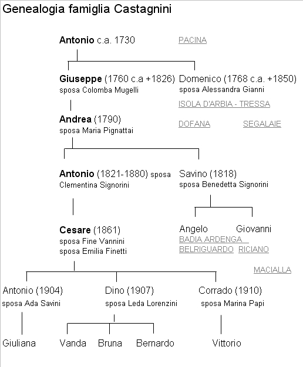
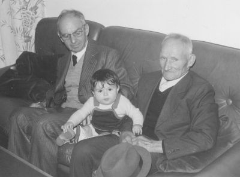
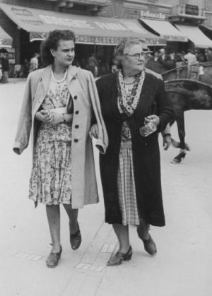

Quercegrossa (Ricordi e memorie)
CAPITOLO II - FAMIGLIE DEL '900
Indice dei Capitoli
Indice Famiglie del '900
CASTAGNINI CESARE (1887 - Residenti); fattori/commercianti/imprenditori; Macialla/Petroio/Quercegrossa; da Riciano.
Quando si presenta a Macialla nel 1887, Cesare Castagnini è un giovane di 26 anni ed è chiamato a svolgere mansioni di fattore, inizialmente da solo, poi dal 1892 gli viene affiancata la fattoressa Teresa Viti, consorte di Stefano Cinelli, forse parente di un precedente comproprietario. La nuova padrona, la signora Stella Fracassi vedova Bandini - Piccolomini, lo alloggia nella villa - fattoria con la moglie Fine Vannini sposata nella chiesa di Fogliano l'8 maggio del 1886. La fattoria ospita anche il cocchiere Alessio Stefanucci e, successivamente, la suddetta fattoressa. Di origini contadine, Cesare viene da una famiglia che ha dimorato per molto tempo nelle terre di Sovicille e precisamente al podere delle Segalaie della tenuta Cavaglioni. Là è nata sua sorella Maria, battezzata il 19 giugno 1851 a S. Salvatore a Pilli. Lui, invece, a seguito del provvisorio trasferimento della famiglia, è nato alla Badia Ardenga di Montalcino il 5 agosto 1861, figlio di Antonio e Clementina Signorini. Infatti, ai primi del 1854, i fratelli Savino e Antonio Castagnini, con mogli e figlioli lasciavano le Segalaie per spostarsi in un lontano podere della diocesi di Montalcino, in quel di Badia Ardenga dove rimasero vent'anni, fino al marzo 1873 quando ritornarono nei dintorni di Siena, a Belriguardo. Fecero entratura al podere Casanuova del sig. Pozzesi, nella parrocchia di Marciano, con Cesare che ha compiuto 12 anni. Facendo un passo indietro vediamo che la storia documentata dei Castagnini inizia alla fine del Settecento quando, prima di tornare in Val d'Arbia, dimorano nella parrocchia di Pieve a Pacina vicino Castelnuovo B.ga, in diocesi di Arezzo.

Per essere più precisi si può stabilire che il trasferimento nella diocesi senese sia avvenuto tra il 1793 e il 1798, come si ricava da alcuni atti di battesimi fatti alla Canonica a Cerreto e a S. Salvatore a Pilli. Nella prima chiesa, l'11 febbraio 1790 veniva battezzato Andrea Castagnini di Giuseppe e di Colomba Mugelli, della parrocchia di S. Piero a Pacina, cui fa seguito l’altro battesimo di Giovanni Castagnini, di Domenico e Alessandra Gianni, cugino del precedente, e infine, nel 1791, è documentato quello di Bennardino di Domenico il 31 gennaio 1793. A completare i dati, si battezzava il 4 aprile 1798 nella chiesa di S. Salvatore a Pilli una bambina chiamata Maria, figlia di Giuseppe Castagnini e di Colomba Mugelli. Lo spostamento nelle terre della Val d'Arbia è confermato ancora dalla morte della piccola Maria avvenuta nel 1802, nella parrocchia di S. Ilario all'Isola, figlia di Giuseppe Castagnini e di Colomba, e dal successivo battesimo di Annunziata del 7 maggio 1803, figlia di Domenico e Alessandra Gianni. Per finire, nella chiesa di S. Michele Arcangiolo a Tressa il 6 giugno 1804 si sposava Luigia del fu Domenico Castagnini, sorella quindi di Giuseppe e Domenico, con il vedovo Giuseppe Cenni. Un battesimo del 1805 di una figlia di Domenico, registrato nella parrocchia di Dofana, che ci dà la nascita di Francesca di Domenico Castagnini e Alessandra Gianni, "coniugi della cura di Guistrigona", ci informa di un momentaneo ritorno della famiglia nelle terre di Castelnuovo, prima di dirigersi definitivamente alle Segalaie, cura di S. Salvatore a Pilli, Comune di Sovicille, fra il 1806 e il 1810. Da questo momento la famiglia vivrà in questo podere fino al 1854, e in mezzo secolo di permanenza manterrà costantemente le sue medie dimensioni di circa dieci componenti, con una leggera flessione negli anni Trenta, quando si abbasserà a sei/sette elementi. L'avo dei Castagnini di Quercegrossa è quindi Antonio nato intorno al 1730 ed è il padre di Giuseppe (ca. 1760) e Domenico (ca. 1768). Ma tra i due fratelli saranno i discendenti di Giuseppe, e di suo figlio Andrea, a garantire la continuità del nucleo familiare che resterà sempre unito perdendo soltanto qualche rametto, come quello di Cesare che si rende autonomo a fine Ottocento. Il suddetto Andrea, del quale si conosce soltanto una sorella, Maria, maritata nel 1827, prenderà in moglie Maria Pignattai, sua coetanea, che vivrà fino al 2 marzo 1851 dopo avergli dato tra il 1817 e il 1832 ben nove figli, dei quali cinque morti in età infantile e Giovanni scomparso a 21 anni nel 1853. Alla morte della Pignattai il parroco annotò la sua pietosa fine: "... morì a 61 anni dopo una lunghissima malattia ... morì rassegnatissima comunque lacera da tanti spasimi ... gli fu fatto il funerale e sepolta nel camposanto delle Segalaie". Degli altri suoi figli, Teresa (1823-1893) si maritò con Lorenzo Granai, morì 70enne e fu sepolta alle Segalaie dove evidentemente era rimasta con il marito; Savino (1818) e Antonio (1821) daranno continuità alla famiglia, insieme, ma non per molto, ai cugini, figli di Domenico e Alessandra Gianni. Di questa coppia, oltre ai rammentati Giovanni e Bennardino si conoscono altri sei figli che comunque hanno lasciato poche notizie. Gli eredi di Domenico, quindi, scompariranno ben presto dalla vista, mentre lui visse lungamente, per 82 anni, fino al 17 febbraio 1850 e morì in un anno che, come vedremo, avrà altri tristi lutti. Vivevano intanto nella vicina Bagnaia, al podere Fornacella, i Signorini, una famiglia di coloni con Francesco e Maria Burroni genitori di due sorelle, Benedetta e Clementina, nate nel 1821 e ora in età da marito come i due giovani Castagnini delle Segalaie. Dai fidanzamenti si passò ai matrimoni, celebrati in due diverse cerimonie, nella chiesa di Bagnaia, col 26enne Savino che prese Benedetta il 27 aprile del 1843, e Antonio che impalmò Clementina il 1 febbraio successivo. Si mettevano le basi per le future generazioni, e questa volta sarà la stirpe del capoccio Savino ad avere più consistenza in famiglia, anche a causa del tiro mancino che il destino riservò al fratello Antonio. Infatti, Antonio e Clementina, a cadenza biennale, misero al mondo due maschietti e una femmina, nel 1845, 1847 e 1848, chiamati Agostino, Angiolo e Assunta. Ma nel 1850 una pestilenza, oltre all'anziano Domenico, rammentato, si portò via i tre bambini. Nacquero poi Maria il 19 giugno 1851 e Angiola il 31 dicembre 1853 a confortare Antonio e Clementina, che con le due piccole compìrono il nuovo trasloco che la famiglia si apprestava a fare verso Montalcino. D'altronde, anche Savino, che ebbe subito un maschio battezzato Franco il 14 marzo del 1844, dovette poi attendere sette anni prima che Benedetta gli partorisse Angelo il 13 luglio del 1851. E' con questa situazione anagrafica che i Castagnini si diressero alla Badia Ardenga di Montalcino, abbandonando le Segalaie dopo quasi sessanta anni di permanenza. Partirono ai primi del 1854 e il loro periodo montalcinese si protrasse per vent'anni. Qui nacque subito il 6 giugno Giovanni di Savino, a cui fecero seguito Stella (1858) e Raffaello (1863). Trascorreva il tempo e sembrava che Antonio e Benedetta rimanessero senza figli maschi, quando, finalmente, la lieta novella e la nascita di Cesare il 5 agosto 1861, che fu il loro ultimo figlio. Esaurita la fase di Badia Ardenga, la famiglia fece ritorno verso Siena e si insediarono a Belriguardo dove rimasero circa un decennio. Vi entrarono in tredici, cinque del nucleo di Antonio e otto di Savino, compreso Franco, l'unico sposato, coniugato con Elina Bonfiglio e tutti e due li ritroviamo residenti a S. Petronilla nel 1903. Un decennio circa rimasero i Castagnini al podere Casanuova, poi si misero in cammino per Riciano dove si sposarono tutti i figli di Savino, e lì nacquero i loro discendenti: Angelo sposò Giuseppa Muzzi ed ebbe Quinto nel 1889, con Cesare compare di battesimo, Guglielma nel 1890 e Guglielmo nel 1892; Giovanni prese nel 1889 Serafina Pianigiani che gli diede Ersilia; Raffello sposò Eugenia Giannini e nacque Emilio nel 1894. Dopo il ritorno in terra di Siena, la vecchia generazione dei Castagnini cominciò a perdere colpi e il 15 giugno del 1874, dopo pochi mesi l'arrivo a Belriguardo, passò all'altra vita Benedetta Signorini in età di 53 anni, cui seguì Antonio il 14 aprile 1880, deceduto a 63 anni. A Riciano invece trapassarono Clementina il 1 marzo 1886, a 63 anni, e Savino l'8 maggio 1891, 70enne. Con la scomparsa degli anziani abbandoniamo i Castagnini di Riciano per ritornare sulle tracce di Cesare che abbiamo lasciato ragazzo a Belriguardo. Questo ragazzino di vivace intelligenza, ricordato in famiglia come autodidatta molto intelligente che imparò a leggere e scrivere da sé, deve aver frequentato qualche corso di agraria, utile per intraprendere la sua carriera di fattore. Infatti, 20enne, lasciata la famiglia, lo troviamo abitare a Corposanto di Uopini dove, probabilmente al suo primo incarico, funge da sottofattore dal 1881. Vi abita con la mamma Clementina, vedova da un anno di Antonio. Resteranno insieme per un tempo sconosciuto, per poi rientrare a Riciano dove Clementina, come abbiamo visto, vi morirà nel marzo 1886, e non potrà così assistere al matrimonio di Cesare con la 20enne Fine Vannini di Bernardino, celebrato tre mesi dopo, l'8 maggio, nella chiesa di Fogliano, popolo della sposa. A questo punto, Cesare Castagnini, definito ancora “colono di Riciano” nell'atto del suo matrimonio, trova impiego alla fattoria di Macialla e vi si trasferisce con la moglie nell'anno 1887, e la sua storia si inserisce in quella delle famiglie di Quercegrossa. L'inizio, certamente pieno di entusiasmo del nuovo fattore, viene turbato però dalla repentina morte della moglie Fine, il 28 agosto 1888, la quale non fece in tempo a dargli dei figli. A Macialla, intanto viveva nella famiglia Finetti una vispa ragazzina di 14 anni, Emilia, figlia di Giulio e Giachetti Assunta. Il tempo passò ed Emilia si fece donna e un bel giorno il fattore decise di riprender moglie. L’agente Cesare e la colona Emilia celebrarono il loro matrimonio nel 1902 a Quercegrossa, il 22 novembre, davanti ai testimoni Augusto e Niccolò Mannucci Benincasa, proprietari di Macialla, e Modesto Boddi. Lui ha 41 anni, lei 28 essendo nata il 29 gennaio 1874 e battezzata a S. Leonino. Negli anni precedenti il matrimonio, un cugino di Cesare, Giovanni di Savino, venne ad abitare a Quercegrossa. A lui fece seguito nel 1984, Maria, la sorella maggiore di Cesare, sposata con Bernardino Vanni. Entrarono coloni a Passeggeri e poi al Casalino dal 1899 dove Maria venne meno il 23 marzo del 1903, all'età di 54 anni. Tornando a Cesare, l'anno successivo al matrimonio portò una grossa novità. Infatti, dopo quindici anni di servizio lascia Macialla e torna a Pietralta dove sarà il fattore di Mucenni. La data registrata del suo arrivo è il 26 ottobre 1903. Qui nascono Antonio il 3 maggio 1904, battezzato a Vagliagli, Dino, nato a Siena il 10 novembre 1907, e Corrado nel 1910. Nel 1911 la famiglia fa un altro passo importante che la conduce ad un nuovo trasferimento. Si cerca un gestore dell'appalto - bottega e i Castagnini sono interessati a intraprendere questa nuova attività; in particolare Emilia, che ne diventerà l'ostessa. Concluso l'accordo, nel giugno 1911, rilevano la bottega e vanno ad abitare le case Ticci, sopra la bottega stessa. Sono undici stanze in due piani, sulla parte sinistra del palazzo, che alcuni anni più tardi, nel 1924, verranno modificate e acquistate, parte dai Tacconi e il resto dagli stessi Castagnini, che ne mantengono tuttora la proprietà. La gestione dell'appalto della "sora Emilia" perdurerà per un decennio, fino agli ultimi mesi del 1922, quando sarà ceduto ai Brogi. Nel censimento del 1921 Cesare è definito "esercente in commestibili", il figlio Antonio è "fabbro" e Dino "commesso". Ma dei tre giovani nessuno volle interessarsi della rivendita, e questa fu una della cause della rinuncia. Il figlio maggiore Antonio, o meglio "Tono", è fabbro alla Ripa, ma nel maggio 1931 emigrerà a Firenze, assunto alle Officine "Galileo" e, escluso il periodo bellico quando sfollerà a Quercegrossa, in quella città si sistemerà per sempre dopo aver preso moglie a Vagliagli, Ada Salvini di Adamo, il 19 maggio 1934. Dino, invece, era stato avviato all'agricoltura, garzone a Maciallina, e messo a guardar pecore. Ci rimase molto poco perché insoddisfatto, e allora venne affidato a un capo mastro, il Bellini, un muratore di Siena e dintorni che, preso a ben volere il ragazzo, se lo portava dietro, insegnandogli l'arte. Dino, bendisposto, frequentò anche un corso serale di disegno a Siena.
Nel 1936, costituì una propria azienda edile, la EdilCo36, e divenne il muratore di Quercia e del Chianti di Castellina e svolse questa professione fino agli ultimi suoi giorni. Ci lasciò il 2 agosto del 1984. Dal suo matrimonio con la 21enne Leda, detta Lida, dei Lorenzini di Belvederino, celebrato il 16 gennaio 1935, con Brunetto Rossi e Attilio Bernardeschi testimoni, nacquero Vanda, Bruna e Bernardino. Lida sopravvisse al marito per spengersi il 27 marzo 1992 all'età di 78 anni.

Dino Castagnini con la nipotina Marta e l'anziano Giovacchino Lorenzini
Il più giovane, Corrado, seguì le orme di Dino, e fu sempre muratore; all’inizio dipendente, poi in società col fratello. Formò una famiglia il 28 aprile 1937 con Marina Papi dell'Olmicino, e da questa unione nacque Vittorio. La sua professione lo portò a lasciare Quercegrossa per le Miniere di Lilliano nel 1946, ma con rimpatrio intorno al 1955 nella sua nuova abitazione, posta lungo la statale di fronte al Leccino Nuovo, dove finì i suoi giorni il 10 ottobre 1994, dieci anni prima di Marina. Il buon fattore Cesare morì durante la guerra, il 18 luglio del 1943, in età di 82 anni, ed Emilia lo seguì, un po' più tardi, l'8 giugno 1957: aveva 83 anni. Da ricordare che il 7 agosto 1926 Cesare si era trasferito per lavoro in una fattoria di Buonconvento, dove rimase fino al 20 giugno 1930 quando rientrò a Quercegrossa.
CASTAGNINI GIOVANNI (1899-1905); salariati; Arginanino/Macialla.
Cugino del fattore Cesare Castagnini di Macialla, Giovanni di Savino venne ad abitare a Quercegrossa, informato certamente dal fattore. Era un salariato e si sistemò il 3 marzo del 1899 all'Arginanino, per un periodo di tre anni, con la piccola famiglia composta di cinque donne: la moglie Serafina Pianigiani e le quattro giovanissime figlie: Ersilia, Zaira, Suema e Gesuina, dai tre ai nove anni. Dall'Arginanino si spostò a Macialla, dove vissero dal 1903 al 1905, quando se ne andarono a Pontignano. Là si sposarono Ersilia nel 1911 (avendo come testimonio Serafino Petri, il babbo della zia Anna di casa Mori), e Zaira nel 1913 con Giuseppe Civai di S. Dalmazio. Più tardi li troviamo a Uopini, dove Giovanni vi morì nel 1925.
CASTAGNINI GUIDO (1932-1963); possidenti; Villino Edelweis; da Siena.

Pur non avendo mai avuto la residenza a Quercegrossa, avendola mantenuta a Siena dove abitava nella parrocchia di S. Cristoforo, in Via Cecco Angiolieri, dal 1924, proveniente da Montecelso di Monteriggioni, il sor Guido fu persona nota a tutti per la sua costante presenza nel villino, chiamato Edelweis come la figlia, e per essere stato proprietario del podere di Gardinina insieme alla convivente signora Teresa Nenci, la quale preferiva però la città alla campagna.
Infatti, lei si vedeva poco in giro per le strade di Quercegrossa, per poi sparire quasi del tutto dopo la disgrazia della perdita della figliola Bibi nel famoso incidente del 1945. La loro villetta, costruita negli anni 1932/33 al tempo dell'acquisto di Gardinina, rimase quindi il rifugio del sor Guido che negli anni 1950/60 vi trascorse la sua vita tra il podere e il bar delle ACLI, dove immancabile la sera rizzava la partita a carte.
Nella foto: la signora Teresa Nenci (convivente col sor Guido)
e la figlia Edelweis (Bibi) in Piazza del Campo.
Le vicende di questa famiglia hanno del romanzesco, ma il finale si rivelerà tragico.
"La giovane Teresa Nenci si era accompagnata col conte Luigi Borghesi, ma la famiglia era contraria a questa unione senza matrimonio, e quando il Borghesi morì gli lasciò una sostanziosa eredità. Teresa poi si accompagnò con Guido Castagnini, che era lo stalliere del conte e convissero a lungo e tornarono a Quercegrossa. Guido era il fratello di Armando il padre di Rudi e Paolo”.
Guido Castagnini era nato nel popolo di Marciano il 5 maggio 1880 da famiglia contadina, figlio di Angelo (cugino del fattore Cesare di Quercegrossa) di Savino e di Giuseppa Muzzi. Si hanno notizie di cinque suoi fratelli: Cesare, Ernesto, Guglielmo, Quinto e Armando. Morì all’ospedale di Siena il 19 agosto 1962, celibe, e venne sepolto al Laterino.
Sua figlia “la Bibi, Edelweis Castagnini, ragazza con gli occhi verdi, era fidanzata con uno di Siena, ma si lasciarono e lei si diede alla bella vita". Questo atteggiamento la portò a frequentare i militari inglesi e gli costò la vita.
Il sor Guido è ricordato come persona benestante, anzi ricca, e lo rivedono quando la sera tornando a piedi da Gardina si riempiva le tasche di grano, anche degli altri, da dare alle proprie galline che allevava nel pollaio presso la villa. La sua morte e quella di Teresa nel 1966, portarono alla vendita per procura del podere di Gardinina e alla trasmissione ereditaria della villetta ai nipoti, figli del fratello Armando, Paolo e Rudi. Le due famiglie vi abitano ancora, ma Paolo è morto di recente.
Una storica foto con quattro personaggi d’epoca.
Da sinistra: Odoardo Pratellesi, Guido Castagnini, Carlo Brogi e Lando Bonelli.
|